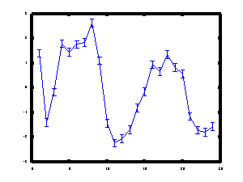
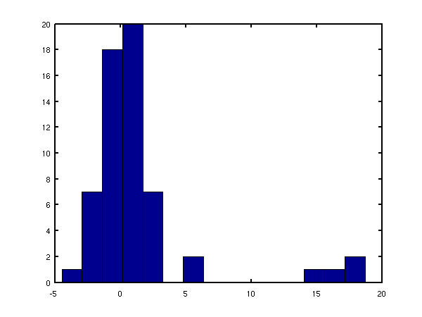

Software for variational Inference of transcription factor activities in MATLAB.
This page describes examples of how to use the Dynamical Model for Variational Inference of Protein Concentration and Regulatory Intensities detailed in this paper
G. Sangunetti, N. D. Lawrence and M. Rattray (2006) Probabilistic Inference of Transcription Factor Concentrations and Gene-Specific Regulatory Activities in Bioinformatics 22 (22) pp 2275-2281
Current release is 0.11.
Release 0.11 contains a bug fix for file chipVarEstepCMu.m
Release 0.1 is the first release associated with the paper, containing scripts for recreating the results given.
The toolboxes required to run the code are listed below.
| Toolbox | Version |
|---|---|
| NDLUTIL | 0.15 |
Finally you will also need the NETLAB toolbox in your path.
The main scripts are demTuVar and demSpellmanVar which run the code
on the metabolic and cell cycle data sets. Also of interest may be the
script demFakeVar which runs the code on artificial data. demTuVar
and demSpellmanVar invoke the functions chipVarEMmu and chipVarEM
respectively which compute the posterior estimates of the latent
variables by maximising the variational lower bound on the likelihood.
The functions used are different as there is no need to estimate the
baseline expression level for cDNA array data such as the cell cycle
data set. The scripts output a variable model, containing the parameter
values which maximise the likelihood, and expectationsB (posterior
expectations of the regulatory intensities) and expectationsC, posterior
expectations of the protein concentration profiles. The function
chipVarEMmu also outputs a variable expectationsMu containing
posterior statistics for the distribution of the baseline expression
levels. The variable expectationsC has four fields: .entropy, a number
contatining the posterior entropy of the approximating distribution, .c,
a matrix with as many rows as transcription factors and as many columns
as time points, .ccT, a 3D array containing the correlations among
transcription factors at each time point, and .cAltc, a 3D array
containing correlations among transcription factors at consecutive time
points. By specialising the transcription factor index one can obtain
plots of the transcription factor protein concentrations with errorbars.
An example is show below for the transcription factor ACE2 during the
cell cycle.

Inferred protein concentration profile for the transcription factor
ACE2 during the yeast cell cycle.
Similarly, expectationsB has several fields, but only two of them are of
interest for data analysis, .b and .errorbars (the others are necessary
for the estimation of the variational lower bound). The expectationsB.b
variable is a matrix containing in each row the regulatory intensity
with which a gene is affected by each transcription factor. Obviously
most of the entries will be zero due to the sparsity of the network
structure. The matrix expectationsB.errorbars contains the associated
error bars. By specifying to a transcription factor, we can obtain a
distribution of the significance levels of its regulatory intensities.
An example of this is shown below for the transcription factor ACE2
during the cell cycle.

Significance of the regulatory intensities for the transcription factor ACE2 during the yeast cell cycle. The plot shows the ratio between gene-specific regulatory intensities and the associated noise
Page last modified on Sat Jan 6 11:44:09 GMT 2007.